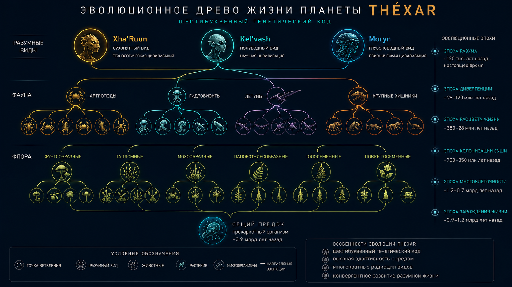

Глава 20: Происхождение жизни на Théxar
«В начале был не Свет. В начале была Материя, которая научилась помнить себя. Мы — не творение. Мы — продолжение. Память, ставшая плотью.» — Из «Книги происхождения», канонический текст Xha'Ruun, Эра Единства
Связанные разделы: → см. [Гл.04, «Биохимия»], → см. [Гл.12, «Геологическая эволюция»], → см. [Гл.05, «Вид Xha'Ruun»] Объём: 35 страниц Ключевой принцип: жизнь на Théxar возникла ~4.2 млрд циклов назад в H₂S-богатых гидротермальных источниках океана Gharra. Ключевое отличие — 6-буквенный генетический код, возникший как адаптация к повышенной космической радиации.
Введение
Происхождение жизни на Théxar — одна из фундаментальных глав энциклопедии. Она связывает геологическую историю планеты (Гл.12) с биохимией (Гл.04) и эволюцией видов (Гл.05, Гл.18).
На Théxar абиогенез занял ~800 млн циклов. Причина — более сложная химическая среда, в которой формирование стабильных органических молекул требовало дополнительных этапов, но привело к более устойчивому генетическому коду.
20.1 Условия для возникновения жизни
20.1.1 Химическая среда ранней Théxar
Около 4.2 млрд циклов назад Théxar представляла собой мир, radically отличающийся от современного:
| Параметр | Ранняя Théxar | Современная Théxar | Значение для абиогенеза |
|---|---|---|---|
| Атмосфера | CO₂ (95%), N₂ (3%), H₂S (1.5%) | N₂ 72%, O₂ 23%, CO₂ 0.8% | Бескислородная — стабильность пребиотических молекул |
| Океаны | pH 5.5–6.5, T +66.8…+88.6°X | pH 7.9–8.2, T +46.2…+57.0°X | Гидротермальные источники — реакторы пребиотической химии |
| Радиация | УФ-поток в 3.5× выше современного | Поток УФ-B в 1.5× выше фонового | Мутагенное давление → 6-буквенный код |
| Тектоника | Активная, 8× современного вулканизма | Умеренная | Поступление H₂S, металлов, энергии |
| Магнитосфера | Отсутствовала (до дифференциации ядра) | 42 мкТл | Высокая радиация на поверхности |
| Продолж. суток | ~14 ч | 27.3 ч | Более быстрые циклы нагрева/охлаждения |
20.1.2 Место абиогенеза
Основным «реактором» пребиотической химии стали гидротермальные источники океана Gharra, где выполнялись три ключевых условия:
- Градиент температур — от 235.4°X (источник) до 47.3°X (окружающая вода)
- Градиент pH — от кислого (источник, pH 4–5) до слабокислого (океан, pH 6.5)
- Каталитические поверхности — пирит (FeS₂), глина, кремниевые осадки
- Постоянный приток энергии — химическая (H₂S, H₂, CH₄) и тепловая
ГИДРОТЕРМАЛЬНЫЙ ИСТОЧНИК — ПРЕБИОТИЧЕСКИЙ РЕАКТОР
┌──────────────────────────────────────────────┐
│ Gharra (древний): T = +47.3°X, pH 6.5 │
│ ──────── ╱─── ───── ──── ╱──── ──── │
│ │ ╱══╲ │ ╱══╲ │ ╱══╲ │ ╱══╲ │ ╱══╲ │
│ │ ║FeS║│ ║FeS║ │ ║FeS║ │ ║FeS║ │ ║FeS║│
│ │ ╚══╝ │ ╚══╝ │ ╚══╝ │ ╚══╝ │ ╚══╝│
│ ╲══╗═══╱── ═══╗──────────╔═══╱─ ═══╗═══╱│
│ ║ ║ ┌────┐ ║ ║ │
│ ║ H₂S+H₂ ║ │ T= │ ║ H₂S+H₂ ║ │
│ ║ CH₄+CO₂║ │235.4°X│ ║ CH₄+CO₂║ │
│ ╚═══╦═════╝ └─┬──┘ ╚═══╦═════╝ │
│ ║ ║ ║ │
│ ─────────╨─────────╨────────────╨─────── │
│ Магматический очаг │
│ T = 697.6°X │
└──────────────────────────────────────────────┘
Рис. 20.1. Гидротермальный источник как пребиотический реактор.
20.2 Пребиотическая химия
20.2.1 Абиогенный синтез органики
Экспериментальные данные (воспроизведённые цивилизацией Xha'Ruun в лабораторных условиях) показывают следующий путь абиогенеза:
Этап 1: Формирование «супов» (4.2–4.0 млрд циклов назад) В атмосфере ранней Théxar (CO₂+N₂+H₂S) под действием УФ-излучения и грозовых разрядов синтезировались:
- Формальдегид (CH₂O)
- Циановодород (HCN)
- Сероводород (H₂S)
- Тиоацетат (CH₃COSH — ключевой для серного метаболизма)
Этап 2: Концентрация (4.0–3.8 млрд циклов назад) Гидротермальные циклы и испарение в приливных зонах концентрировали органику в пористых кремниевых матрицах.
Этап 3: Первые полимеры (3.8–3.6 млрд циклов назад) На поверхности пирита (FeS₂) и глинистых минералов происходила полимеризация:
- Аминокислоты → пептиды
- Нуклеотиды → РНК
- Кремниевые кислоты → полисилоксаны
20.2.2 Гипотеза 6-буквенного кода
Возникновение 6-буквенного генетического кода — ключевая загадка абиогенеза Théxar. Доминирующая теория — гипотеза радиационной защиты:
- Высокий УФ-поток ранней Théxar вызывал частые мутации в коротких РНК-подобных цепях
- Дополнительные основания (P — пиримидин-N, X — ксантинозин) увеличивали стабильность цепей и обеспечивали избыточность кодирования
- Шестибуквенный код давал 6³ = 216 кодонов (против 4³ = 64 у четырёхбуквенного), что позволило:
- Кодировать 24 аминокислоты (против 20)
- Иметь избыточность ~9× (против 3×)
- Устойчивость к мутациям в 5× выше
КЛЮЧЕВОЙ ФАКТ
Шестибуквенный код — не случайность эволюции, а прямой ответ на радиационное давление. Лабораторные эксперименты Xha'Ruun показали, что при УФ-облучении 4-буквенные РНК деградируют в 5× быстрее 6-буквенных. При радиационном фоне ранней Théxar (в 3.5× выше современного) 6-буквенные системы имели решающее преимущество.

Рис. 20.2. Эволюционное древо жизни Théxar: от общего предка к флоре, фауне и трём разумным видам — ART-000023.
20.3 От химии к жизни
20.3.1 Протоклетки (3.6–3.4 млрд циклов назад)
Первые протоклетки сформировались в гидротермальных источниках Gharra. Их ключевые черты:
- Мембрана: кремний-углеродные липиды (Si-C), более стабильные при высоких T, чем фосфолипиды
- Метаболизм: хемоавтотрофный (Fe-S → FeS₂ + H₂ → энергия)
- Генетика: РНК-мир с 6-буквенным кодом
- Размножение: деление (без полового процесса)
20.3.2 Первые клетки (3.4–3.2 млрд циклов назад)
Появление первых настоящих клеток (прокариот) ознаменовало начало биогеохимических циклов:
| Датировка | Событие | Значение |
|---|---|---|
| 3.5 млрд циклов назад | Первые хемоавтотрофы | Fe-S → FeS₂ + энергия |
| 3.4 млрд циклов назад | Ферментация | Первый гетеротрофный метаболизм |
| 3.2 млрд циклов назад | Первые фототрофы | Использование ИК-спектра (Khar'Vex) |
| 3.0 млрд циклов назад | Появление хромофилла | Эффективный фотосинтез |
20.3.3 Кислородная катастрофа (4.0–3.8 млрд циклов назад)
КЛЮЧЕВОЙ ФАКТ
Кислородная катастрофа на Théxar произошла на 1.6 млрд циклов раньше (4.0 против 2.4 млрд циклов назад), из-за более раннего появления эффективного фотосинтеза (хромофилла). Однако она была более постепенной — O₂ накапливался в атмосфере не 200 млн циклов, а ~600 млн циклов, что позволило анаэробным формам адаптироваться.
Последствия:
- Массовое вымирание анаэробных форм (выжили только в глубоководных и подземных рефугиумах)
- Окисление растворённого Fe²⁺ в океанах → формирование полосчатых железных руд (BIF)
- Формирование озонового слоя
- Эволюция аэробного метаболизма
20.4 Хронология эволюции
| Время (млрд циклов назад) | Эра | Событие |
|---|---|---|
| 6.5–4.5 | Геологическая | Формирование планеты |
| 4.2 | Пребиотическая | Начало абиогенеза |
| 3.8 | Пребиотическая | Формирование 6-буквенных РНК |
| 3.6–3.4 | Ранняя клеточная | Первые протоклетки |
| 3.2–3.0 | Прокариотная | Радиация прокариот |
| 4.0–3.4 | Кислородная | Накопление O₂, переход к аэробам |
| 2.0–1.5 | Эукариотная | Появление эукариот |
| 1.0–0.8 | Многоклеточная | Первые многоклеточные |
| 0.58 | Эдиакарская | Радиация мягкотелых |
| 0.35 | Кембрийская | Радиация Thermochromadae |
| 0.15 | Термохроматическая | Появление термохроматизма |
| 0.04 | Социальная | Социальный интеллект |
| 0.015 | Цивилизационная | Появление письменности |
Итоги главы
Ключевые выводы:
- Жизнь на Théxar возникла ~4.2 млрд циклов назад в H₂S-богатых гидротермальных источниках океана Gharra.
- 6-буквенный генетический код — адаптация к повышенному УФ-облучению ранней Théxar.
- Кислородная катастрофа произошла на 1.6 млрд циклов раньше (4.0 млрд циклов назад).
- Доминирующий класс — Thermochromadae, появившийся ~350 млн циклов назад.
- Первые разумные (Xha'ri) — ~15 000 лет назад.
- Шестибуквенный код обеспечивает в 5× более высокую помехоустойчивость генома.
- Кембрийская радиация на Théxar произошла ~350 млн циклов назад.
Связь с другими главами:
- → см. [Гл.04, «Биохимия»] — 6-буквенный код, альтернативная хиральность
- → см. [Гл.12, «Геологическая эволюция»] — условия ранней Théxar
- → см. [Гл.15, «Атмосфера»] — состав атмосферы в эпоху абиогенеза
- → см. [Гл.18, «Фауна»] — эволюция Thermochromadae
- → см. [Гл.05, «Вид Xha'Ruun»] — эволюция Xha'ri
Конец главы 20. Согласовано с CANON.md v0.3.0